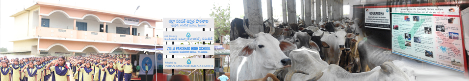

Overview
Indian Immunologicals Limited (IIL), as a responsible national organization and corporate citizen, will undertake socially oriented projects in specific areas such as health, education, environment, women empowerment, rural development, so as to make a significant impact on the lives of the people of India and on the social and economic fabric of India.
IIL understands that these projects shall go beyond its stated mission of making biotechnology in healthcare affordable and accessible. IIL will commit financial resources and human capital commensurate with the demands of the projects undertaken. The selection of projects, prioritization and their oversight during execution will be the responsibility of a Board Committee.
Initiatives
Animal Health CSR Project “Gouraksha”
Animal Health CSR Project ‘Gouraksha”
Introduction
India is endowed with world’s largest number of bovine animals – more than 300 mio cattle and buffaloes. Unfortunately, it also has a very large number of abandoned and destitute animals though are no confirmed statistics or census existing on the size of stray or destitute cattle in the country. It is estimated that there nearly one thousand five hundred Goushala’s and Pinjarpoles in India who try to shelter and care for these abandoned animals. However, most of these institutions do not have sufficient funds to treat animals or prevent them from various diseases. As a result, these animals are not only malnourished, but also are carriers of various diseases. They are the potential source of spread of disease, especially air borne diseases such as Foot and Mouth disease, parasitic diseases etc. These animals are also frequently ignored by governments’ vaccination and health coverage campaigns.
Objective
Indian Immunologicals Limited (IIL) as a part of Corporate Social Responsibility (CSR) has planned to provide assistance for health coverage to destitute and orphaned cattle in select states.
Beneficiaries
As per Department of Animal Husbandry Dairying & Fisheries (DADF), Ministry of Agriculture, number of Goushalas and Pinjarapole societies housing such destitute animals in the country is very large, nearing at least a thousand. Shifting animal population in such places makes it difficult to make correct estimates of animals housed in these shelters. A rough estimate is about one million animals in such goushalas across the country. We plan to survey these Goushalas and Pinjarapole societies on their animal health coverage status and financial strength before short listing them for our CSR activity.
Summary of progress
The CSR activity “Operation Gouraksha” is aimed at providing free deworming and vaccination to destitute animals. Most of these destitute animals are housed in charitable Goushalas and Pinjrapole societies across the country. The project is concentrated majorly in remote areas where the veterinary services are inadequate.
In line with the objectives of this project, we are servicing 1.05 lakhs of animals sheltered in 176 Goushalas spread across 12 states namely AP, Telangana, Karnataka, Jharkhand, Chattisgarh, Bihar, Odisha, MP, UP, Uttarakhand, Delhi and Haryana.
Conclusion
In line with the ancient Indian philosophy, “Service to animals is service to God”. IIL has always been in the forefront of service to the animals and dairy farmers. IIL now wishes to adopt health coverage of destitute animals free of cost as a Corporate Social Responsibility (CSR). IIL expects to cover at least 15% of these destitute animals across the country through this CSR activity by fifth year.
School Adoption Program & Providing Fortified/Flavoured Milk for school children
School Adoption Program & Providing Fortified/Flavoured Milk for school children
During 2015-16, IIL had adopted the Zilla Parishad High School, Laxmapur Village, near IIL’s Karakapatla manufacturing facility. As part of the CSR activity, the school was provided with the infrastructure, students of the school were also provided with Uniforms, Shoes, School bags, Note books etc. Also certain recurring expenditure like the salary of the watchman, housekeeping expenditure, electricity bill, drinking water bill etc. were reimbursed on a monthly basis against the bills submitted by the School Principal.
In support of the Mid-day meal program facilitated by the Government of Telangana, IIL continues to supplement the diet of the school children with Eggs for 3 days and a banana each day. Apart from this, each student is being given 200mL of milk every day under the GIFT MILK program of NDDB Foundation for Nutrition.
IIL actively participates on the occasions like Independence day/Republic day celebrations at the ZPHS Laxmapur.
Achievements of the school subsequent to the adoption by IIL:
- District Best School Award for 2016 – 17
- SSC Mandal level highest GPA for 2016 – 17
- Highest enrollment in the Mandal level for 2016 – 17
- One student got selected for National Means cum – Merit Scholarship Scheme (NMMSS)
- Two students were selected for free seats in corporate college
- Increase in student enrollment in the school and year-wise pass percentage
As a part of the Gift Milk Program by NFN, the Panchayat School was chosen for providing flavored/fortified milk to the children. Daily 100 bottles of milk (200 mL) is delivered to the school by Aavin. The flavours are changed every week. The collector of Nilgiris in the presence of MD, IIL inaugurated the scheme on the 12th of January 2018.
Policy
The objective of the CSR policy is to enable identification and implementation of CSR projects in the interest of the society at large, with the available resources, in a sustainable manner and also enhance IIL’s societal involvement and image.

Focus Areas
The areas in which IIL will focus its CSR activities will be from:
Execution of CSR Projects
CSR Committe
The Corporate Social Responsibility (CSR) Committee, constituted by the Board of Directors of IIL, shall decide on the projects to be undertaken under CSR, based on the need and the impact it would have on the society, in consultation with the management, the local authorities and implementing agency, if any. CSR Committee will approve the resources to be allocated for each project and monitor the implementation of the projects.
Resources
IIL shall allocate at the beginning of any financial year, at least two per cent of its average net profits during the three immediately preceding financial years, for implementing the CSR activities / projects. Any income arising / generated during the CSR Projects and the surplus arising out of CSR activities will also be used only for CSR Projects.
Implementation
A project proposal shall be submitted to the CSR Committee for evaluation and sanction of funds. The investment in CSR activities shall be project based, with time lines for achievement of milestones, which shall be finalized before such investments. The CSR Committee shall decide on the priority of the activities. The CSR Committee shall monitor and review the CSR projects and shall have authority to provide guidelines / directives with respect to the activities. The CSR Committee shall also review the impact of such projects on the society.
The Managing Director shall constitute an implementation team for each project and delegate such powers as may be required for implementing the projects. The implementation team shall submit such periodical reports, as may be directed by the CSR Committee. The implementation team shall also submit a certificate with respect to utilization of the funds, in the manner as may be specified by the CSR Committee, duly certified by the Internal Auditors of the Company. CSR Committee shall also lay down the modalities for implementing the projects.
Implementation of the CSR projects may be taken up through a trust or a society as provided under the Companies Act, 2013 and the rules thereunder, with the approval of the CSR Committee.
The projects shall be fixed for each financial year, however the CSR Committee may extend the period, depending on merits.
Information dissemination
IIL’s CSR activities will be disseminated through its website, annual reports and through the media.
Amendment / Modification
Any amendment/modification to the CSR policy may be carried out by the CSR Committee with the approval of the Board.